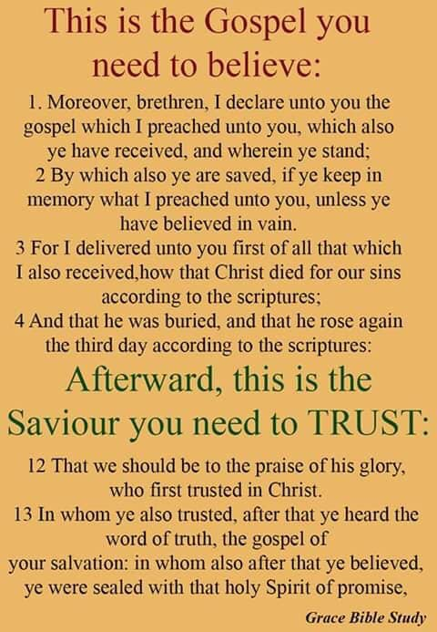

Studies
5.5% of the Bible is for us today found in the books of the Bible, Romans thru Philemon.
We today are also saved by grace thru faith...however, today, our works play no part in our salvation, whatsoever! (and within these books, Romans thru Philemon, 30% is the Apostle Paul dealing with his kinsmen the Jews).
Are you confused yet? Well, this why God tells us to "study", II Timothy 2:15 (KJB).
Almost all of Christianity has mixed God's doctrine for Israel, with doctrine that is for us today, to a point where most of today's Christianity is nothing more than a "made up" Christianity, which saves no one!
What is Mid Acts, Pauline, Dispensational, Right Division of my King James Bible? It is the absolute right way to study your Bible.
The Apostle Paul's declaration of the gospel, 1 Corinthians 15:1-4 (KJB).

Hell - Luke 16:19-31
(learning to put bible truths into their proper time slots)
The god of this world - Part 1,2,3
__________
__________